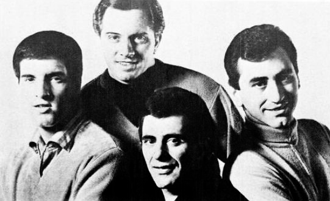

Big Girls Don't Cry is the Bob Crewe and Bob Gaudio single that gave The Four Seasons their second US No. 1.
Vee-Jay released it in October 1962, and it reached the top of the Hot 100 on November 17.
The title came from a line of movie dialogue, though which film is still disputed.

Table of Contents
The Story Behind Big Girls Don't Cry
A Line From a Film
Gaudio's version is that he was dozing in front of a western called Tennessee's Partner.
He heard a slap, then a woman's calm reply: big girls don't cry.
He wrote the line down and finished the song the next morning.
Wikipedia notes that the line does not appear in that film.
Songfacts tells it with Crewe, half-asleep, jotting the line down and writing the song the next day.
Wikipedia also lists a competing memory from Crewe, who named Slightly Scarlet (1956), though that claim carries no citation.
We could not confirm which film, if either, is right.
A Man Who Expects Tears
Stereogum's Tom Breihan sums up the story this way.
A man ends the relationship and expects his girlfriend to fall apart.
She stays composed, and by the end she is the one crying in bed.
Built to Follow Sherry
Songfacts says the record was designed to sound like "Sherry," which had just spent five weeks at No. 1.
Wikipedia adds that The Four Seasons became the first rock-era act to top the Hot 100 with their first two chart entries.
Recording Day
The Sound
Wikipedia dates the session to September 1962, at Universal Recording in Chicago.
It lists this lineup and crew on the record.
- Frankie Valli on lead vocals, mostly in falsetto.
- Tommy DeVito on guitar.
- Nick Massi on bass vocals.
- Bob Gaudio on piano.
- Panama Francis on drums.
- Bruce Swedien as engineer.
Wikipedia says co-arranger Charles Calello's father plays the trumpet solo.
Massi's bass part repeats through the whole record.
He left the group in 1965 as they moved away from that bass sound.
A Cooler Reception Now
Breihan calls the sound "stiff and brittle."
He hears a beat "closer to polka than it is to R&B."
His 2018 Number Ones column gave the record 2 out of 10, though he liked the lyric.
How It Charted
Five Weeks on Top
The single reached No. 1 on the Billboard Hot 100 on November 17, 1962.
It held that spot for five weeks, matching the run of "Sherry."
It also spent three weeks at No. 1 on the R&B chart.
The B-side was "Connie-O," and the album was Sherry & 11 Others.
| Chart | Peak |
|---|---|
| Billboard Hot 100 | No. 1 (five weeks, from November 17, 1962) |
| Billboard R&B | No. 1 (three weeks) |
| New Zealand (Lever Hit Parade) | No. 1 |
| UK Singles | No. 13 |
Covers and Screen Moments
Honors and Covers
- The record entered the Grammy Hall of Fame in 2015.
- It ranks No. 183 on Billboard's 2018 all-time Hot 100 chart.
- The BPI certified it Silver in the UK.
- Edith Massey recorded a punk-leaning cover in 1982.
- The Weather Girls recorded it for their 1985 album of the same name.
- MC Lyte built her 1988 song "Don't Cry Big Girls" on it.
On Screen
The record plays in the opening scene of Dirty Dancing (1987).
It also appears in The Main Event (1979) and Mermaids (1990).
Where It Fits
The single belongs to 1962, the year the group took over the radio.
The full story is in our Four Seasons biography.
Its follow-up is the Walk Like a Man song story.
For the wider sound, see the Pop and Brill Building hub.
It is also on our best 60s songs list.
FAQ
Who wrote this song?
Bob Crewe and Bob Gaudio wrote it, and Crewe produced the record for Vee-Jay.
When did it reach number one?
It reached number one on the Billboard Hot 100 on November 17, 1962, and stayed there for five weeks.
It also topped the R&B chart for three weeks.
Which movie inspired the title?
Gaudio named the western Tennessee's Partner, but Wikipedia says the line does not appear in that film.
Crewe is said to have remembered a different film, so the origin is disputed.
What album is it on?
It appears on the album Sherry & 11 Others.
The B-side was "Connie-O."
Who has covered the song?
Edith Massey covered it in 1982, and The Weather Girls recorded it for a 1985 album of the same name.
MC Lyte built a 1988 song on it.
Wikipedia's entry on the song covers the credits and charts in more depth.
Press play above and hear Big Girls Don't Cry for yourself.